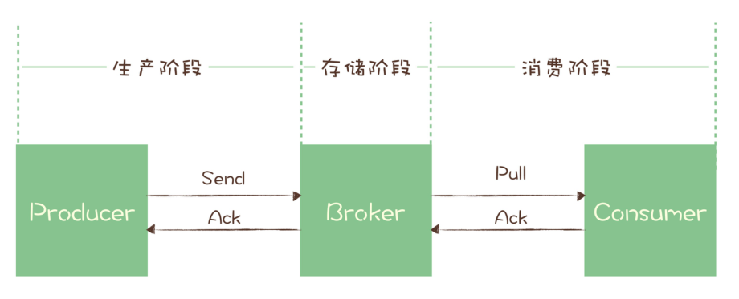

1，MQ作用
异步处理：事件发生后投递到MQ，多个无依赖关系的消费者组订阅该主题，实现后续多个任务的异步处理。可以减少等待，实现步骤之间的并发，提升性能。缺点：同步操作变成异步，降低了数据的一致性，需要分布式事务补偿。
限流：网关处将请求放入MQ，MQ性能优于Redis，不会造成性能瓶颈，后端按照自身处理能力消费请求。MQ同时提供持久化机制，保证消息可靠传输。超时请求直接丢弃，后端可自行调整消费者数量，提升处理能力。
解耦：新增任务只需要订阅所需数据的主题，无需上游改动，实现上下游数据解耦。
2，数据流动

主题：服务端存储消息的容器，包含多个队列/分区，每个队列/分区存取部分数据。
消费者组：包含多个消费者，当订阅某个主题后，每个消费者被分配一个或者多个队列/分区(一个队列/分区只对应一个消费者)，多消费者并行处理。消费者间为竞争关系，不会收到同一份数据。同一个主题的多个消费者组间独立，各自可以获得完整的主题内数据。
可靠性保证：使用“请求-确认”机制，消息保存到服务端后，给生产者发送成功响应，消费者再发送下一条消息；消费者成功消费消息后，给MQ发送成功响应，消费者才能消费下一条消息，否则队列将被当前消费者独占，拒绝其他消费者的拉取请求，当超时后还未收到消费者反馈，则将结束消费者独占，当前消息可以被再次拉取消费。
有序性保证：由于一个队列只对应一个消费者，多个队列的消费者独立。所以主题层面消息无有序性保证，只在队列/分区层面能保证。如果需要保证局部有序性，使用使用
MessageQueueSelector根据共同ID进行一致性哈希运算指定发送队列，消费端注册MessageListenerOrderly监听器，从队列中有序地获取消息并处理。如果要求全局严格顺序，只能把生产者、消息队列/分区、消费者数配置成1。消费关系：MQ维护每个消费者组在每个队列/分区的偏移，消费者数量<=队列/分区数，由MQ均衡策略选择队列与消费者对应关系，保证分区平衡。多消费者并行处理，可以手动增加队列/分区、消费者数量以提高并发度。
3，RocketMQ消息事务
适用场景为需要异步更新数据，并且对数据实时性要求不高的场景。
发送半消息：本地事务执行前发送半消息，半消息对消费者不可见。
为什么要在本地事务执行前发送，而不是本地事务执行成功后发送：发送半消息+确认机制本质为一种两阶段提交，类似于MySQL的两阶段提交保证持久性。如果本地事务执行完成宕机，未向MQ发送提交或者回滚指令，MQ将在超时后手动查询本地事务状态，自动提交或者回滚半消息，保证本地事务如果执行成功，下游一定可见所发半消息。
回查状态：RocketMQ中broker超时未收到提交或回滚请求，将定期去生产者上反查这个消息事务对应的本地事务的状态，然后根据反查结果决定提交或者回滚这个事务。
ACID准则：假设本地事务操作为X，下游消息消费者需要执行操作为Y，当X成功执行，而消息未被消费，Y尚未执行时：X，Y操作分离，不满足原子性；本地状态已改变，下游状态未改变，不满足一致性；本地事务提交后对本地其他操作可见，不满足隔离性；持久性依赖于消息的可靠传输与可靠投递机制。
具体实现依赖于
TransactionListener，该类执行本地事务，并反馈执行状态，如果是COMMIT_MESSAGE则提交半消息，如果是ROLLBACK_MESSAGE回滚半消息；同时支持MQ回查本事事务状态，实现自动提交/回滚半消息。xxxxxxxxxx81public interface TransactionListener {2// 执行本地事务，并根据执行状态提交/回滚半消息3// LocalTransactionState.ROLLBACK_MESSAGE;4// LocalTransactionState.COMMIT_MESSAGE;5LocalTransactionState executeLocalTransaction(final Message msg, final Object arg);6// 回查本事事务状态，实现自动提交/回滚半消息。7LocalTransactionState checkLocalTransaction(final MessageExt msg);8}生产者半消息处理：发送半消息->执行本地事务->提交/回滚本消息
xxxxxxxxxx161//DefaultMQProducerImpl#sendMessageInTransaction()2public TransactionSendResult sendMessageInTransaction(final Message msg,3final TransactionListener localTransactionListener, final Object arg)4//给待发送消息添加半消息属性5MessageAccessor.putProperty(msg, MessageConst.PROPERTY_TRANSACTION_PREPARED, "true");6//发送这条半消息7sendResult = this.send(msg);8// 如果发送成功,调用TransactionListener实现类执行本地事务方法 executeLocalTransaction()9switch (sendResult.getSendStatus()) {10case SEND_OK: {11localTransactionState = transactionListener.executeLocalTransaction(msg,12}13}14// 根据半消息发送的结果和本地事务执行的结果，事务的提交或者回滚15this.endTransaction(msg, sendResult, localTransactionState, localException);16}服务端半消息处理
先记录半消息原始的主题队列，再把半消息保存在一个特殊内部主题
RMQ_SYS_TRANS_HALF_TOPIC下队列号为0的队列，这个主题和队列对消费者不可见。xxxxxxxxxx111//TransactionalMessageBridge#parseHalfMessageInner()2private MessageExtBrokerInner parseHalfMessageInner(MessageExtBrokerInner msgInner) {3// 记录消息的主题和队列，到新的属性中4MessageAccessor.putProperty(msgInner, MessageConst.PROPERTY_REAL_TOPIC, msgInner.getTopic());5MessageAccessor.putProperty(msgInner, MessageConst.PROPERTY_REAL_QUEUE_ID,6// 替换消息的主题和队列为：RMQ_SYS_TRANS_HALF_TOPIC，07msgInner.setTopic(TransactionalMessageUtil.buildHalfTopic());8msgInner.setQueueId(0);9msgInner.setPropertiesString(MessageDecoder.messageProperties2String(msgInner.getProperties()));10return msgInner;11}在
TransactionalMessageCheckService服务中启动一个定时器，定时从半消息队列中读出所有待反查的半消息，Broker会给对应的Producer发送执行事务状态反查的请求。根据返回响应中的反查结果，决定半消息提交/回滚，或者继续反查。如果是提交半消息，MQ将半消息从半消息队列复制到消息真正的主题和队列中，消费者可以开始消费。xxxxxxxxxx221// AbstractTransactionalMessageCheckListener#sendCheckMessage()2public void sendCheckMessage(MessageExt msgExt) throws Exception {3Channel channel = brokerController.getProducerManager().getAvailableChannel(groupId);4if (channel != null) {5// Broker给对应半消息的Producer发一个要求执行事务状态反查的 RPC 请求6brokerController.getBroker2Client().checkProducerTransactionState(groupId, channel, checkTransactionStateRequestHeader, msgExt);7} else {8LOGGER.warn("Check transaction failed, channel is null. groupId={}", groupId);9}10}1112//EndTransactionProcessor#processRequest()13public RemotingCommand processRequest(ChannelHandlerContext ctx, RemotingCommand request){14if (MessageSysFlag.TRANSACTION_COMMIT_TYPE == requestHeader.getCommitOrRollback()) {15// 提交,把半消息从半消息队列中复制到这个消息真正的主题和队列中去16this.brokerController.getTransactionalMessageService().deletePrepareMessage(result.getPrepareMessage());17this.brokerController.getTransactionalMessageService().getTransactionMetrics().addAndGet(msgInner.getTopic(), -1);18} else if (MessageSysFlag.TRANSACTION_ROLLBACK_TYPE == requestHeader.getCommitOrRollback()) {19// 回滚20this.brokerController.getTransactionalMessageService().deletePrepareMessage(result.getPrepareMessage());2122}
4，可靠传输
丢失检测：为每个生产者指定要发送的队列/分区，再利用发送端拦截器，给每个消费者的消息附加生产者信息+连续递增的序号，各个生产者序列独立，然后在消费者端检查每个队列/分区中各个生产者生成消息序号是否连续。
 生产阶段可靠性保证：确认服务器是否正确收到消息，如果反馈失败将重试。
xxxxxxxxxx141// 同步发送，等待服务器返回2try {3RecordMetadata metadata = producer.send(record).get();4} catch (Throwable e) {5//消息发送失败6}78// 异步发送，通过回调处理确认消息9producer.send(record, (metadata, exception) -> {10if (metadata != null) {11} else {12//消息发送失败13}14});存储阶段可靠性保证：当服务器将消息持久化到磁盘后，将向生产者发送确认请求，否则生产者将重试发送。具体的策略可以分为：当主节点成功存储就返回成功；当至少两个节点成功存储就返回成功；当过半节点成功存储就返回成功。
消费阶段可靠性保证：执行消费业务逻辑成功后，才会给Broker发送消费确认响应，保证消息一定被成功消费，否则下次拉消息的时候将返回同一条消息。
5，防止重复消费
根据消息投递次数，给出三种传递消息时能够提供的服务质量标准
At most once: 消息在传递时，最多会被送达一次，允许丢消息。At least once: 消息在传递时，至少会被送达一次，不允许丢消息，但允许有少量重复消息出现。绝大多数MQ提供该等级服务质量，此时消息队列很难保证消息不重复。Exactly once：消息在传递时，只会被送达一次，不允许丢失也不允许重复。
由于消息队列很难保证消息不重复，只能在消费端保证幂等性。
At least once+ 幂等消费 =Exactly once存储系统唯一性约束：DB中创建消息中转流水表，并为消息标识字段添加唯一性约束，或者使用Redis的
SETNX指令，消息能成功插入则可以被消费，否则丢弃消息。版本约束：为数据增加版本号属性，类似乐观锁，比较当前数据的版本号是否和消息中的版本号一致，如果不一致就拒绝更新数据，更新数据的同时将版本号 +1。
全局唯一约束：给每条消息指定全局唯一的ID，消费时如果该消息未被消费过，才更新数据，然后将消费状态置为已消费。难点：全局唯一ID；全局消费状态存储；为防止并发消费同一条消息时，导致重复消费，{检测消息消费状态、消费消息、设置消息消费状态}需要使用事务或者分布式锁，保证复合操作原子性。
为什么舍弃
Exactly once：消费者消费时MQ需要判断是否重复，增大开销；消息超时后未收到消费者反馈，不能简单的再次投递，需要MQ利用回查机制去查询消费者是否成功消费，增大开销。
6，避免消息积压
发送端：通过增大队列/分区数量来增大系统可支持的并行度，该举措适合在线业务系统；批量发送消息，提高整体吞吐量，但是将增大反馈时延，适合离线分析系统。
消费端：通过增大消费者组中消费者数量，提高消费端消费能力。注意：由于一个队列/分区只能对应一个消费者，所以队列/分区数要大于等于消费者数量。
禁止在未开启批量消费时，将多条消息取出加入JVM队列，使用多线程消费队列中消息。对于队列/分区，只有前一个消息确认消费后才能获取下一条消息，这将导致内存队列中消息尚未被消费，但是MQ中已标记为消费，当JVM宕机，将导致消息丢失，同时单个队列/分区并发消费将丢失有序保证。
批量消费：MQ支持批量消费获得多条消息，批量处理。适用于无有序性要求，支持多线程并发批量处理的任务。
对于kafka只支持批量确认，如果批次中某些任务失败，只能反馈失败，然后重试整个批次，或者反馈成功，这将丢弃失败任务。
对于RocketMQ 支持单个消息确认，对于返回
RECONSUME_LATER的消息，将这些消息放入重试队列，并在配置的延迟后重新投递这些消息给消费者，在此期间将停止向消费者发送更多消息，直到失败的消息被成功消费，以保证有序性。积压处理：消费降级降低发送端消息数，保证下游正常运行；下游将低优先级消息转储，延后处理。
7，Kafka性能优化方式
批量+异步处理：消息在生产者客户端、服务器、消费者客户端以批量为单位传输、写入磁盘、集群复制。在生产者客户端收集发往相同分区的消息打包为批量消息，在消费者客户端解包为单个消息，批次消息被确认后再异步给消息的生产者发送反馈。
批量异步消费实现：

-->消费者通过
fetcher.sendFetches()构造请求，向fetcher获取指定的消息;-->在
fetcher中通过client.send()将请求异步发送出去，并注册回调处理返回Response。此时Request并没有被真正发出，而是被暂存在client.unsend中等待被发送；-->调用
client.poll()方法，将之前构造的请求发送出去，返回的请求被暂时存放在Fetcher.completedFetches中，再通过注册的回调处理收到的响应；-->在
fetcher.fetchedRecords()中，将返回的响应反序列化后转换为消息列表，返回给调用者。xxxxxxxxxx171// KafkaConsumer#pollForFetches()2private Fetch<K, V> pollForFetches(Timer timer) {3// 如果缓存里面有未读取的消息，直接返回这些消息4final Fetch<K, V> fetch = fetcher.collectFetch();5if (!fetch.isEmpty()) {6return fetch;7}8// 构造拉取消息请求，并加入待发送请求集合9// 内部调用client.send()10sendFetches();11// 发送网络请求拉取消息，等待直到有消息返回或者超时12client.poll(pollTimer, () -> {13return !fetcher.hasAvailableFetches();14});15// 返回拉到的消息16return fetcher.collectFetch();17}顺序读盘：磁盘顺序读写性能优于随机读写，MQ将分区消息顺序写入对应log文件，消费消息时顺序读取log文件。
数据压缩：节省存储空间，提升网络传输性能。MQ将一批消息一起压缩，在服务端不用进行解压，整批直接存储， 然后整批发送给消费者，批消息由消费者进行解压。
Pagecache缓存：PageCache作为磁盘高速读写缓存，读写文件优先使用Pagechage。在MQ中消息读写比例约为1:1，每条消息只会被读取一次，所以使用只读缓存没有意义，使用系统维护PageCache的读写缓存即可。如果消息写入服务端就被消费，缓存命中率高，免去磁盘IO。
传统消息发送流程，磁盘将数据写入磁盘缓冲区->DMA将磁盘缓存拷贝到内核态缓冲->cpu将数据从内核态拷贝到用户态->cpu将数据拷贝到socket缓冲区。
使用零拷贝消息发送流程，磁盘将数据写入磁盘缓冲区->DMA将磁盘缓存拷贝到内核态缓冲->零拷贝技术使用
mmap()系统调用，把内核缓冲区里的数据映射到用户空间->sendfile()在内核缓冲区中操作数据，将数据发到socket缓冲区。数据通过 DMA 进行传输，不需 CPU 参与。
8，RocketMQ发送消息
1，参数
通信模式
CommunicationMode，决定生产者行为和回调执行：单向发送：发送消息后立即返回，不处理响应，不关心是否发送成功。
同步发送：发送消息后等待响应；
异步发送：发送消息后立即返回，在提供的回调方法中处理响应。
队列选择器
MessageQueueSelector：选择消息存入topic下哪个队列消息发送结果处理回调
SendCallback
2，异步发送流程：注意底层的netty已经实现异步发送，当前的异步是指在选择消息队列等操作，由线程池异步实现，最终callback仍旧由netty线程调用。
-> 通过ExecutorService 创建发送任务，实现异步发送，生产者提交后即返回。
xxxxxxxxxx171// DefaultMQProducerImpl#send()2public void send(final Message msg, final MessageQueueSelector selector, final Object arg,3 final SendCallback sendCallback, final long timeout){4 // 线程池异步发送5 Runnable runnable = new Runnable() {6 7 public void run() {8 try {9 sendSelectImpl(msg, selector, arg, CommunicationMode.ASYNC, newCallBack,10 timeout - costTime);11 } catch (Exception e) {12 newCallBack.onException(e);13 } 14 }15 };16 executeAsyncMessageSend(runnable, msg, newCallBack, timeout, beginStartTime);17} ->根据队列选择器MessageQueueSelector选择要发送的队列。这里使用策略模式来实现不同场景下使用不同的队列选择算法。如果需要实现消息局部有序性，需要自行实现对应的MessageQueueSelector。
xxxxxxxxxx141// DefaultMQProducerImpl#sendSelectImpl()2private SendResult sendSelectImpl(3 Message msg,4 MessageQueueSelector selector,5 Object arg,6 final CommunicationMode communicationMode,7 final SendCallback sendCallback, final long timeout8) {9 //根据队列选择器`MessageQueueSelector`选择要发送的队列10 mq = mQClientFactory.getClientConfig().queueWithNamespace(selector.select(messageQueueList, userMessage, arg));11 if (mq != null) {12 return this.sendKernelImpl(msg, mq, communicationMode, sendCallback, null, timeout - costTime);13 }14}3，同步发送流程：当前线程执行队列选择等操作，并等待发送操作返回，但是由于发送由netty实现，所以最终callback由netty线程调用。
xxxxxxxxxx61// DefaultMQProducerImpl#send()2public SendResult send(Message msg,3 long timeout) throws MQClientException, RemotingException, MQBrokerException, InterruptedException {4 // 当前线程执行队列选择等操作，并等待发送操作返回5 return this.sendDefaultImpl(msg, CommunicationMode.SYNC, null, timeout);6}7，集群管理
1，RocketMQ集群复制
复制的基本单位是
Broker，对应的多个队列将整体复制。在写入消息时，要求至少消息复制到半数以上的节点，才给客户端返回成功，保证宕机数不过半时数据不丢失，数据一致。支持通过选举来动态切换主节点，保证可用性。
2，Kafka集群复制
复制的基本单位是分区，消息在写入到主节点，且等待ISR个节点都复制成功后再返回。
Kafka 使用 ZooKeeper 来监控每个分区的多个节点，如果某个分区的主节点宕机，会利用 ZooKeeper 来选出一个新的主节点，解决可用性问题。